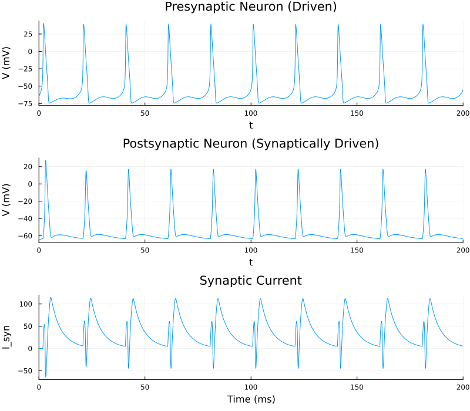

Example 2: Directed Synaptic Connection (Two Neurons)
Now let's connect two neurons. This example introduces network assembly and chemical synapses by linking a presynaptic neuron to a postsynaptic one via an exponential synapse.
Instead of building the HH channels from scratch like we did in Example 1, we'll use the pre-built channels from the MTKNeuralToolkit.HodgkinHuxley standard library to show how quickly you can spin up standard models.
using MTKNeuralToolkit
using MTKNeuralToolkit.HodgkinHuxley: SodiumChannel, PotassiumChannel, LeakChannel
using ModelingToolkit: mtkcompile, @named
using ModelingToolkitStandardLibrary.Blocks: Sine
using OrdinaryDiffEq
using Plots1. Build Two Neurons using the Standard Library
top = Scalar()Scalar()This helper function shows how to pass kwargs to the standard library channels. You can tweak maximal conductances (g) or reversal potentials (E_rev) without rewriting the gating dynamics from scratch.
function build_hh_neuron(name::Symbol; gNa=120.0, ENa=50.0, gK=36.0, EK=-77.0,
gleak=0.3, Eleak=-54.4)
@named cap = Capacitor(topology=top, C=1.0)
@named na = SodiumChannel(topology=top, g=gNa, E_rev=ENa)
@named k = PotassiumChannel(topology=top, g=gK, E_rev=EK)
@named leak = LeakChannel(topology=top, g=gleak, E_rev=Eleak)
return build_compartment(cap, [na, k, leak]; name=name, V_init=-65.0, topology=top)
end
pre_neuron = build_hh_neuron(:pre_neuron)Compartment{NoMorphology, NoGeometry, Float64}(Model pre_neuron:
Subsystems (8): see hierarchy(pre_neuron)
cap
injector
syn_injector
p
⋮
Equations (52):
36 standard: see equations(pre_neuron)
16 connecting: see equations(expand_connections(pre_neuron))
Unknowns (51): see unknowns(pre_neuron)
cap₊v(t)
cap₊i(t)
cap₊p₊v(t)
cap₊p₊i(t)
⋮
Parameters (7): see parameters(pre_neuron)
cap₊C
na₊g
na₊E_rev
k₊g
⋮, (V = pre_neuron₊cap₊v(t), p_pin = Model pre_neuron₊p:
Equations (2):
2 connecting: see equations(expand_connections(pre_neuron₊p))
Unknowns (2): see unknowns(pre_neuron₊p)
v(t)
i(t), n_pin = Model pre_neuron₊n:
Equations (2):
2 connecting: see equations(expand_connections(pre_neuron₊n))
Unknowns (2): see unknowns(pre_neuron₊n)
v(t)
i(t), I_ext = pre_neuron₊injector₊I₊u(t), I_syn = pre_neuron₊syn_injector₊I₊u(t), cap_name = :cap), -65.0, Scalar(), NoGeometry(), NoMorphology())We'll give the postsynaptic neuron altered channel parameters (e.g., a lower sodium conductance and a different leak reversal) to make it distinct.
post_neuron = build_hh_neuron(:post_neuron; gNa=80.0, ENa=45.0, gleak=0.5)Compartment{NoMorphology, NoGeometry, Float64}(Model post_neuron:
Subsystems (8): see hierarchy(post_neuron)
cap
injector
syn_injector
p
⋮
Equations (52):
36 standard: see equations(post_neuron)
16 connecting: see equations(expand_connections(post_neuron))
Unknowns (51): see unknowns(post_neuron)
cap₊v(t)
cap₊i(t)
cap₊p₊v(t)
cap₊p₊i(t)
⋮
Parameters (7): see parameters(post_neuron)
cap₊C
na₊g
na₊E_rev
k₊g
⋮, (V = post_neuron₊cap₊v(t), p_pin = Model post_neuron₊p:
Equations (2):
2 connecting: see equations(expand_connections(post_neuron₊p))
Unknowns (2): see unknowns(post_neuron₊p)
v(t)
i(t), n_pin = Model post_neuron₊n:
Equations (2):
2 connecting: see equations(expand_connections(post_neuron₊n))
Unknowns (2): see unknowns(post_neuron₊n)
v(t)
i(t), I_ext = post_neuron₊injector₊I₊u(t), I_syn = post_neuron₊syn_injector₊I₊u(t), cap_name = :cap), -65.0, Scalar(), NoGeometry(), NoMorphology())2. Define the Synapse
ExpSynapse is a continuous, sigmoid-driven exponential synapse. When the presynaptic voltage crosses the threshold (V_th), the gating variable s increases, injecting current into the postsynaptic compartment.
@named excitatory_synapse = ExpSynapse(g_max=2.0, τ=5.0, E_rev=0.0, V_th=-20.0, slope=2.0)Model excitatory_synapse:
Equations (2):
2 standard: see equations(excitatory_synapse)
Unknowns (4): see unknowns(excitatory_synapse)
s(t)
I_syn(t)
V_pre(t)
V_post(t)
Parameters (5): see parameters(excitatory_synapse)
g_max
τ
E_rev
V_th
⋮To make this synapse inhibitory, you just change E_rev to a value below the postsynaptic resting potential (e.g., E_rev=-80.0). No other code changes are needed.
@named inhibitory_synapse = ExpSynapse(g_max=2.0, τ=5.0, E_rev=-80.0, V_th=-20.0, slope=2.0)Look at the source code for ExpSynapse: it's pretty simple! You can modify the equations to make your own custom synapse. The interface is extremely flexible: you can have complicated multi-state synapses.
3. Wire the Network using SynapseSpec
A SynapseSpec maps the pre- and post-synaptic voltages to the synapse block, and designates which current variable in the postsynaptic compartment will receive the injected current.
synapse_specs = [
SynapseSpec(
pre_neuron.interfaces.V,
post_neuron.interfaces.V,
post_neuron.interfaces.I_syn,
excitatory_synapse
)
]1-element Vector{SynapseSpec}:
SynapseSpec(pre_neuron₊cap₊v(t), post_neuron₊cap₊v(t), post_neuron₊syn_injector₊I₊u(t), Model excitatory_synapse:
Equations (2):
2 standard: see equations(excitatory_synapse)
Unknowns (4): see unknowns(excitatory_synapse)
s(t)
I_syn(t)
V_pre(t)
V_post(t)
Parameters (5): see parameters(excitatory_synapse)
g_max
τ
E_rev
V_th
⋮, nothing)4. Driving Stimuli
We'll drive the presynaptic neuron with a time-varying sinusoidal current so it spikes rhythmically. The postsynaptic neuron receives no external drive, so any spiking it does is purely from the synaptic connection.
@named current_driver = Sine(amplitude=8.0, frequency=0.05, offset=8.0)
drivers = [(1, current_driver)]1-element Vector{Tuple{Int64, ModelingToolkitBase.System}}:
(1, Model current_driver:
Subsystems (1): see hierarchy(current_driver)
output
Equations (1):
1 standard: see equations(current_driver)
Unknowns (1): see unknowns(current_driver)
output₊u(t): Inner variable in RealOutput output
Parameters (5): see parameters(current_driver)
offset
start_time
amplitude
frequency
⋮)5. Build and Simulate the Network
net = build_acausal_network([pre_neuron, post_neuron];
synapse_specs=synapse_specs,
drivers=drivers,
name=:two_neuron_net)
println("Compiling 2-neuron network...")
sys = mtkcompile(net.sys)
prob = ODEProblem(sys, [], (0.0, 200.0))
println("Solving...")
sol = solve(prob, Rosenbrock23())retcode: Success
Interpolation: specialized 2nd order "free" stiffness-aware interpolation
t: 1187-element Vector{Float64}:
0.0
0.0028441329098396638
0.023402851148887564
0.04883765620089674
0.0967155574893538
0.1517830198672597
0.23376696901312427
0.32549291165022554
0.44478178072236385
0.575586949846314
⋮
197.0412809658115
197.48733186679829
197.93338276778508
198.3216570909145
198.70993141404392
199.09820573717334
199.44335011525348
199.78849449333362
200.0
u: 1187-element Vector{Vector{Float64}}:
[0.052, 0.596, 0.317, -65.0, 0.052, 0.596, 0.317, -65.0, 0.0]
[0.05201197393390346, 0.5959999079166937, 0.3170004431524694, -64.97733100458217, 0.052011310674356555, 0.5960000125277367, 0.31700037161427824, -64.99524100644763, 4.837958161084901e-13]
[0.05214270262608501, 0.5959913796063655, 0.31700901230159945, -64.81406366600929, 0.05209926722561563, 0.595998461865484, 0.3170041737215372, -64.9611479610638, 4.138965202647466e-12]
[0.05240514650561069, 0.5959617190964291, 0.3170326271204084, -64.61341168812487, 0.05222198533938716, 0.5959926012227501, 0.31701155454496177, -64.91969878245249, 9.071134879998752e-12]
[0.0531631455381148, 0.5958486777189002, 0.3171158704818243, -64.23910311485588, 0.05248792905372833, 0.5959700480169079, 0.3170332502689718, -64.84376650311964, 1.9726948612825418e-11]
[0.0543986524954946, 0.5956261380993813, 0.3172739563457311, -63.8129378892877, 0.05283863418691935, 0.5959260952130038, 0.3170703582870639, -64.7596270253941, 3.4593071384084615e-11]
[0.05681493318680049, 0.5951107506616388, 0.3176321363083104, -63.18412819395425, 0.05342193084013241, 0.5958266638323487, 0.31714841490806267, -64.64022970201427, 6.318754053647166e-11]
[0.06017770183382949, 0.5942697023399302, 0.31820698494150124, -62.48404421696062, 0.05412767768908796, 0.5956698643508552, 0.3172661004557883, -64.51432587230158, 1.0746918697955692e-10]
[0.06538922867866917, 0.5927478869367057, 0.3192312733806339, -61.56987071943177, 0.055081614439731204, 0.595399163217436, 0.317463224181492, -64.36165729435602, 1.9313820318085277e-10]
[0.07207123709918736, 0.5904975266640927, 0.3207216736201252, -60.547560828919806, 0.05613144826658525, 0.5950225676970773, 0.317731402239033, -64.20739907445679, 3.448429477759249e-10]
⋮
[0.04374871817942341, 0.561706238946157, 0.3229313167572238, -66.294466809959, 0.07275283194078794, 0.36767224429150086, 0.4110671795493701, -62.35874339023462, 0.07606423937286351]
[0.04762577836830096, 0.565019130994109, 0.32146471288321093, -65.47934003452578, 0.07140302719880924, 0.3749318127803584, 0.40675208880454256, -62.515837031757336, 0.06957039343126675]
[0.052959372491563364, 0.5665666546002122, 0.32119593977139554, -64.4617474051242, 0.07016287618821782, 0.3820737906407495, 0.40259955372587986, -62.66207781617816, 0.06363094779395075]
[0.05914812646110756, 0.5661989798594064, 0.3220953239794458, -63.39432500444961, 0.06916782668873799, 0.3881865848361976, 0.3991167393364695, -62.781077249807716, 0.05887555677216907]
[0.06723298300381583, 0.5639208962203902, 0.32422278395517384, -62.13123864634825, 0.06824635689705687, 0.3941955200814665, 0.39575597042598487, -62.89239994512641, 0.054475554919847624]
[0.07799642419987238, 0.5593178031754328, 0.3278004344315167, -60.614225044891676, 0.06739477648759866, 0.40009454058051785, 0.3925164757642006, -62.99635632936573, 0.050404382713253794]
[0.09104127479309454, 0.5527474790386393, 0.3324759342275888, -58.94288372534156, 0.06669293687531698, 0.40524171151976923, 0.38973780033262967, -63.08287798116764, 0.04704176762850762]
[0.10972833284661457, 0.5429517208270765, 0.3390275306751991, -56.724849368765014, 0.06604000419615567, 0.4102943711581342, 0.38705326826901004, -63.16395690461024, 0.04390348312481254]
[0.12636325534205411, 0.5346128890788275, 0.34434710816333225, -54.83419151760655, 0.06566299351680879, 0.41334269356801306, 0.38545428751017263, -63.21113317179955, 0.04208492357965055]6. Plot the Results
p1 = plot(sol, idxs=[sys.pre_neuron.cap.v],
title="Presynaptic Neuron (Driven)", ylabel="V (mV)", legend=false)
p2 = plot(sol, idxs=[sys.post_neuron.cap.v],
title="Postsynaptic Neuron (Synaptically Driven)", ylabel="V (mV)", legend=false)
p3 = plot(sol, idxs=[sys.excitatory_synapse.I_syn],
title="Synaptic Current", ylabel="I_syn", xlabel="Time (ms)", legend=false)
plot(p1, p2, p3, layout=(3,1), size=(800, 700))
This page was generated using Literate.jl.